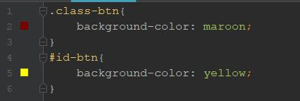
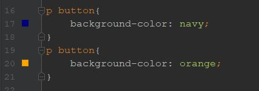
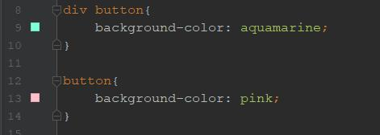

หลายๆคนคงเคยใช้ !important เมื่อเราต้องเขียน style ทับกันจะใช้ !important เพื่อเป็นตัวบอกว่าเราจะใช้อันไหนเป็นหลัก
แต่หากเรามีวิธีที่ดีกว่านั้น เรามาลองทำความรู้จักกับ CSS Specificity กันดีกว่าเพื่อชีวิตที่ดีขึ้น
CSS Specificity เป็นค่าหนึ่งที่บอก web browser ว่าจะเลือกใช้ selector อันไหนเพื่อมาใช้กับ element นั้น บน website เมื่อมี selector ที่เขียนทับกัน
เมื่อเรามี class และ id ที่ใช้เปลี่ยนพื้นหลังของ button เหมือนกัน ดังในรูป
ตัวอย่าง
จะเห็นได้ว่าสีของ button นั้น จะไปเลือกใช่ในส่วนของ id-btn ซึ่งเป็นสีม่วง
หากเราเขียน selector ที่เหมือนกัน browser จะเลือกใช้ selector ที่ถูกประกาศไว้ที่ข้างล่างสุด
ตัวอย่าง
เมื่อเราเขียน selector ที่มีความเฉพาะเจาะจงมากขึ้น เช่นในรูป browser จะเลือกใช้อันที่มีความเฉพาะเจาะลงมากกว่า
ตัวอย่าง
จะเห็นได้ว่าสีของ button นั้น จะไปเลือกใช่ในส่วนของ div button หมายถึง tag button ที่อยู่ใน tag div ซึ่งเป็นสีaquamarine
browser จะเลือกใช้ selector ที่ถูกประกาศไว่ล่างสุดหรือ selector ที่มีความเฉพาะเจาะจงมากที่สุด